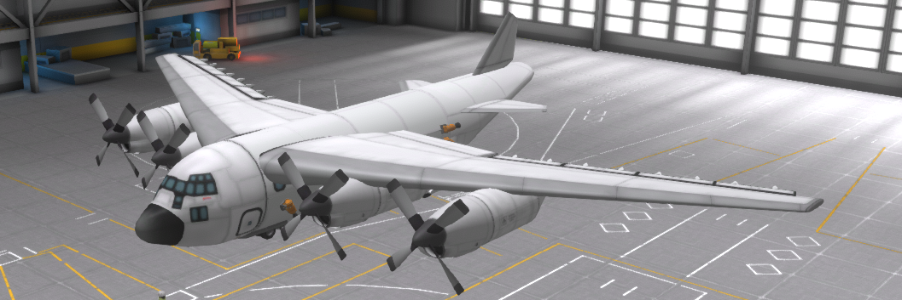
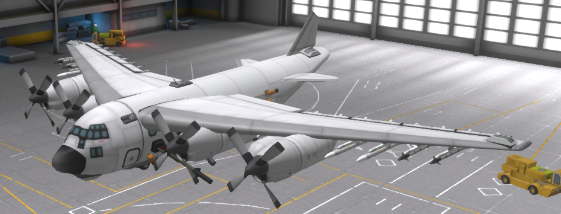
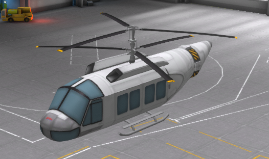
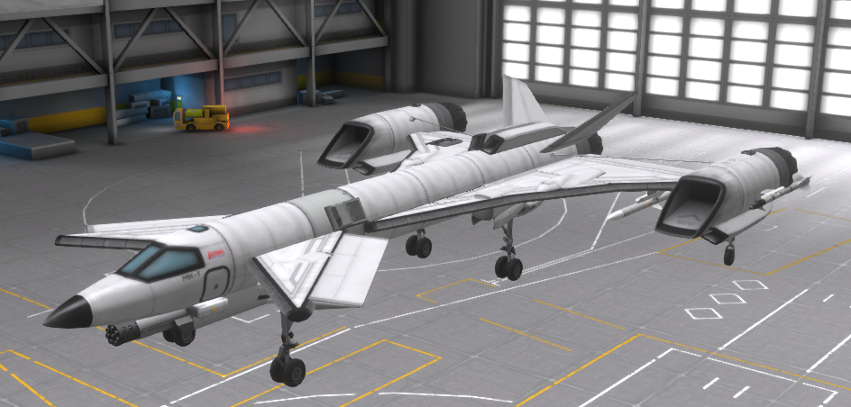
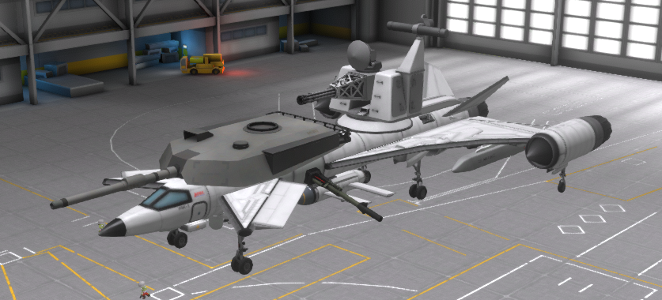

Welcome to the Kerbin Defence Network page!
Are you looking for vehicles to defend your land from the sky?
Well, we have something for you!
Mods used: bdarmory (continued) , tweakscale, airplane plus
The C-260:
A JATO cargo and crew transport aircraft made to combat the "Kraken's Kreations".
comes with a rover armed with a Vulcan turret in the back that can be airdropped

The AC-260:
A C-260 armed with a pair of radial howitzers, and Vulcan and Hydra-70 rocket turrets
Has .50 cal turrets on the tail, wings, and nose

The H-1:
A troop transport helicopter, often used to evacuate civilians

The F-11:
A supermaneuverable fighter. Although outdated in the age of missiles, it still performs at many airshows.
Can you believe it was supposed to be an interceptor?

The F-11 (gunship):
A gunship variant of the F-11. has: A manually guided missile, a pair of radially mounted howitzers,
a Goalkeeper CIWS, an M1 Abrams cannon, 2× cruise missiles, 6 Hellfire missiles, and two .50 cal turrets.
